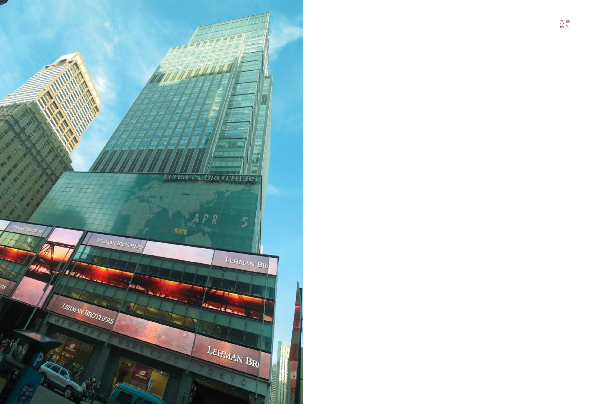

28-29 / 116
28-29 / 116


29
28
SOUTH CHINA ELITE
二
零零八年在美國觸發的次按危機，成為近年
全球（尤其是亞洲）私人銀行與財富管理歷
史的轉折點。
在銀行業中，2008年9月15日乃具有劃時代意義的日
子：那天，擁有158年歷史的雷曼兄弟申請破產保護。倒閉
前，雷曼兄弟是一家管理逾2,750億美元資產的投資銀行。
雷曼兄弟倒閉的影響力無遠弗屆，從華爾街蔓延至世界每
個角落，全球多個國家級及國際級金融中心，無一倖免。
不少金融機構及銀行，相繼陷入資金不足的致命困境。瑞
士銀行、德意志銀行、蘇格蘭皇家銀行及美林證券等全球
金融巨人，無不面臨破產，僅靠各國政府及中央銀行救市
才得以脫離困境。
自那天起，各國中央銀行及金融中心的監管機構，皆
收緊對銀行及金融機構活動的監管。
2008年及2009年，象徵私人銀行與財富管理業界開始
T
he watershed year of the current history of
private banking and wealth management globally,
particularly in Asia, was 2008 – the final blastoff
of the Subprime Mortgage financial crisis.
There was a very distinct demarcation of this
industry on the fateful day of 15 September 2008, when
Lehman Brothers filed for bankruptcy protection after
being in operation for 158 years. Before its collapse,
the investment bank had in excess of US$275 billion
in assets under management (AUM). This debacle
sent shockwaves from Wall Street to every corner of
the world. Every domestic and international financial
center was affected. Many mega financial institutions
and banks literally got into liquidity quagmire. UBS,
Deutsche Bank, Royal Bank of Scotland, Merrill Lynch
and a list of colossal global banks plainly became
“bankrupt”, only saved by their countries’ respective
central banks or national governments.
Since this day, all central banks and regulatory
authorities of the international financial centers have
tightened their grip on the activities of the banks and
financial institutions.
2008 and 2009 were the inception of a new phase of
the private banking and wealth management (PB/WM)
industry. The pendulum has swung from the free-for-
all, laissez faire and create-anything-you-like investment
habitat to a progressively vigilant predicament. Slowly
and surely, the central banks and regulatory authorities
of all the international financial centers have taken over
the central stages to dictate how the private banking and
wealth management professionals should play the game.
This is the comical aftermath where outsiders are
now imposing how the insiders should do their jobs.
The avalanche of new guidelines, regulations,
disciplinary punishments with huge fines and detailed
instructions on how a bank and its relationship
managers or client advisors (RMs or CAs) should handle
clients escalated the costs and difficulties of managing
the private banking and wealth management business.
Internal compliance, risks and legal departments of
the banks further exacerbated the situation by adding
extra “juice” such as additional guidelines on how
front-line staff should administer their marketing and
investment activities.
Clients were enraged over these extraneous
procedures, documents and controls that needed to be
executed before any investment transaction could be
consummated. Everyone is a loser.
進入新時代。宏觀發展的趨勢，從極端自由放任主義走向
愈加嚴格的警惕監察。各國中央銀行及各大國際金融中心
的監管機構，均循序漸進地發揮其作用，規管私人銀行與
財富管理專業人士的行事模式。
環球金融危機帶來其中一個古怪的後遺症，是外行人
指示內行人該如何行事。
鋪天蓋地的新指引、法規、處分、巨額罰款，以及針
對銀行、其客戶經理及客戶顧問與客戶交涉的詳細指示，
都增加了私人銀行與財富管理業務的成本及管理難度。在
此基礎上，銀行的內部法規審查、風險及法律等部門，均
加入針對前線員工的營銷和投資活動指引，令情況雪上加
霜。
這些無關重要的程序、文件及控制等，必須在完成任
何投資交易前辦妥，讓客戶感到不勝其煩。在這樣的制度
下，所有人都是輸家。